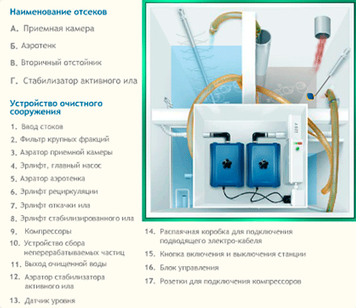

Автономная канализация ТОПАС – комфорт и экономия.
Человек должен чувствовать себя комфортно, где бы он ни находился. Однако есть места, где недоступны атрибуты цивилизации, в частности, централизованная канализационная сеть. Это могут быть загородные посёлки, дачи, гостиничные и производственные комплексы, удаленные от черты города. В данном случае необходимо воспользоваться уникальной разработкой – канализацией ТОПАС.
Отсутствие канализационной системы ставит перед собственниками недвижимости задачу, которую крайне сложно разрешить. Единственный выход, которым пользовались все до настоящего времени – это строительство накопительных подземных резервуаров, которые рано или поздно приходится чистить. Наше предложение совершенно иного рода. Автономная канализация так и называется в связи с тем, что работает без участия человека и не требует соединения с магистральными водосточными системами.
ТОПАС использует в своей работе принцип естественной переработки сточных вод с помощью биологически активных микроорганизмов, которые расщепляют отходы до состояния обычной воды. При этом пользователи подобной системы не слышат лишних неприятных запахов и звуков.
В безвыходной ситуации – выход есть.
Если поставлена цель, достичь комфорта высокого уровня, то и способ её реализации обязательно будет найден. В отношении решения вопроса с канализацией – это канализация ТОПАС. Небольшой по объёму резервуар с подводящим трубопроводом погружается в землю в любом удобном месте, а делать это можно как на стадии строительства, так и при уже готовой постройке. Кроме этого владельцы уникальной разработки получают такие преимущества:
- возможность пользоваться устройством неограниченное время без необходимости проведения ремонта или какого-либо обслуживания;
- подбор модели канализации из огромной линейки, что позволяет осуществить выбор в зависимости от предполагаемого количества стоков;
- универсальность применения – подходит как для частных, так и для промышленных объектов, может быть смонтирована в грунте любого типа;
- доступная цена, минимум затрат на монтаж, отсутствие необходимости тратить средства в будущем. Пока кто-то раздумывает, многие уже пользуются революционным изобретением и наслаждаются комфортом вдалеке от прелестей цивилизации.
Преимущества ТОПАС.
Система канализации ТОПАС обеспечивает биологическую очистку сточных вод, благодаря особым микроорганизмам, обитающим в септике – главном элементе автономной загородной канализации, в котором происходит процесс очищения. Благодаря естественному процессу очистки станция ТОПАС не издает запаха и шума. Но и это еще не все!
- Во-первых, система канализации ТОПАС монтируется в грунт любого типа – при этом цементирование и гидроизоляция котлована не требуются;
- Во-вторых, автономная канализация ТОПАС исправно работает при любых температурах, а в зимний период может быть законсервирована;
- В-третьих, она обеспечивает максимально возможные показатели очистки среди аналогичных систем канализации – 98-99%!
- В-четвертых, более 35 моделей гарантируют устройство автономной канализации на загородном участке с любым количеством проживающих в доме человек.
Применение канализации ТОПАС.
Система очистки ТОПАС или как ее многие называют "автономная канализация XXI века", имеет огромное количество модификаций. Подобное разнообразие позволяет организовать загородную канализацию в любой ситуации – даже тогда, когда другие системы не могут справиться с объемом работ.
Приведем пример: встречаются участки с повышенным уровнем грунтовых вод, где большинство очистных сооружений могут спровоцировать загрязнение территории. Септик ТОПАС очищает сточные воды биологическим путем, и поэтому не приводит к заболачиванию прилегающего участка.
Автономная канализация Топас
Если вы уже возвели загородный дом, и только после этого планируете устройство автономной канализации, ТОПАС – наиболее оптимальный и приемлемый по цене вариант. Ведь проложить трубы на обычной глубине уже не получится. Можно также подобрать совмещенные модели канализации ТОПАС, когда трубы прокладываются на большой глубине в местах с повышенным уровнем грунтовых вод.
Автономные системы канализации загородного дома ТОПАС также могут быть использованы в крупных гостиничных комплексах, несмотря на свое изначальное назначение. Практикуется и организация канализационных систем ТОПАС, которые могут без проблем обслуживать целый коттеджный поселок!!!
Устройство канализации ТОПАС.
Устройство канализации загородного дома ТОПАС обеспечит комфорт за городом и здоровье ее обладателям, а также сэкономит время и деньги. Убедитесь в этом, изучив каталог представленных автономных канализационных систем ТОПАС, обратив внимание на доступные цены. Купить автономную канализацию может позволить себе практически каждый владелец загородного дома.
Нашими специалистами будет подобрана не только необходимая модификация автономной канализации ТОПАС, но и обеспечен ее монтаж. Стоимость стандартного монтажа автономной канализации также включает в себя подготовку котлована и канализационной трубы, что существенно сэкономит ваши расходы.
- Во-первых, система канализации ТОПАС монтируется в грунт любого типа – при этом цементирование и гидроизоляция котлована не требуются;
- Во-вторых, автономная канализация ТОПАС исправно работает при любых температурах, а в зимний период может быть законсервирована;
- В-третьих, она обеспечивает максимально возможные показатели очистки среди аналогичных систем канализации – 98-99%!
- В-четвертых, более 35 моделей гарантируют устройство автономной канализации на загородном участке с любым количеством проживающих в доме человек. Необходимо также отметить, что станция ТОПАС будет работать на протяжении долгого времени. Срок ее функционирования – от 50 лет.
Применение канализации ТОПАС.
Система очистки ТОПАС или как ее многие называют "автономная канализация XXI века", имеет огромное количество модификаций. Подобное разнообразие позволяет организовать загородную канализацию в любой ситуации – даже тогда, когда другие системы не могут справиться с объемом работ.
Приведем пример: встречаются участки с повышенным уровнем грунтовых вод, где большинство очистных сооружений могут спровоцировать загрязнение территории. Септик ТОПАС очищает сточные воды биологическим путем, и поэтому не приводит к заболачиванию прилегающего участка.
Схема работы очистного сооружения
Помните о том, что сброс сточных вод без предварительной очистки может спровоцировать серьезные экологические проблемы. Более того, к владельцам объектов, которые наносят ущерб окружающей среде, могут быть применены серьезные санкции.
Автономные системы канализации ТОПАС помогут избежать вышеуказанных проблем. Очевидно, что предлагаемая нами система ТОПАС – это не просто комфорт, но и залог здоровья вашей семьи!
Выбрать необходимую модель, купить ТОПАС и заказать монтаж вы можете, обратившись к специалистам нашей компании. Просто позвоните нам по телефону:
+7 (495) 213-91-45